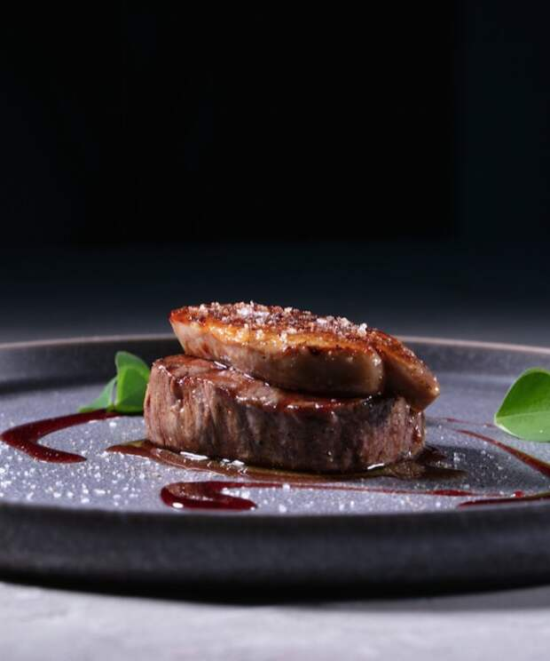
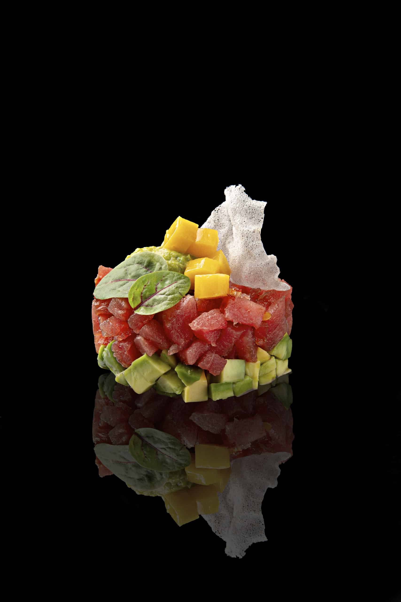
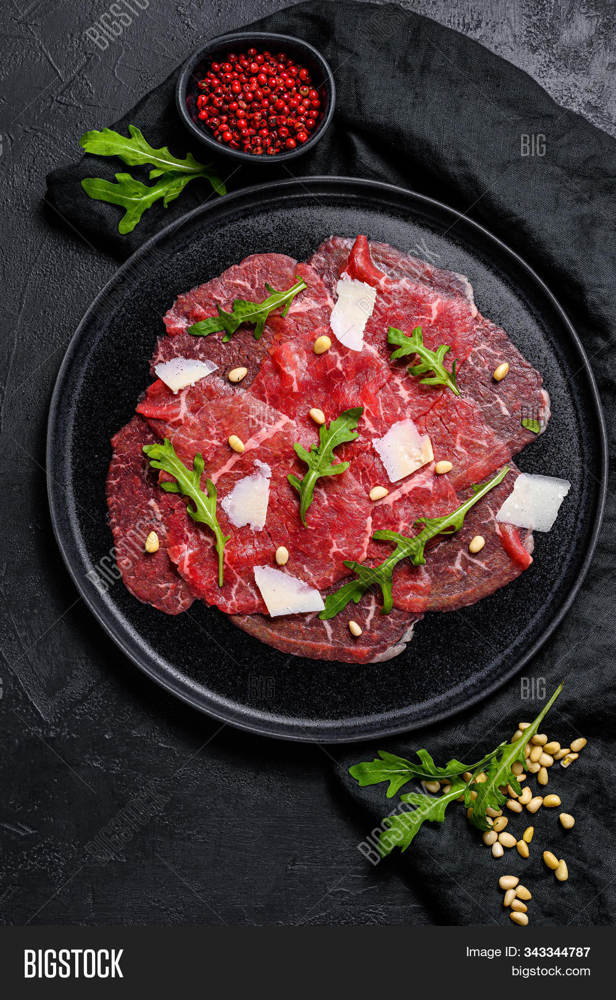
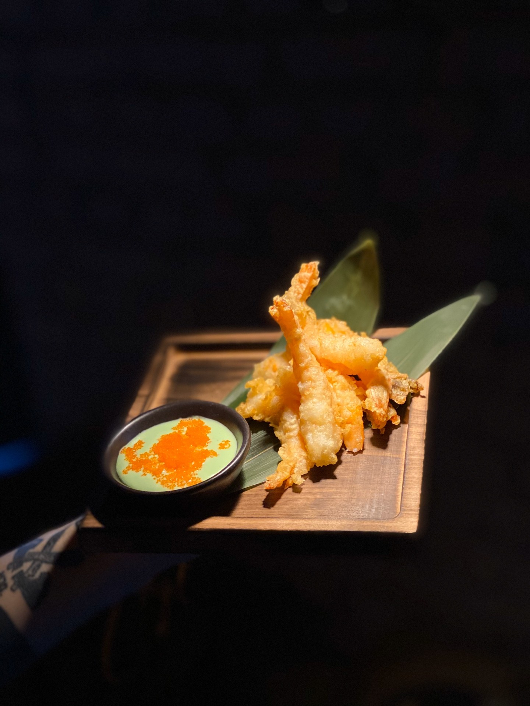
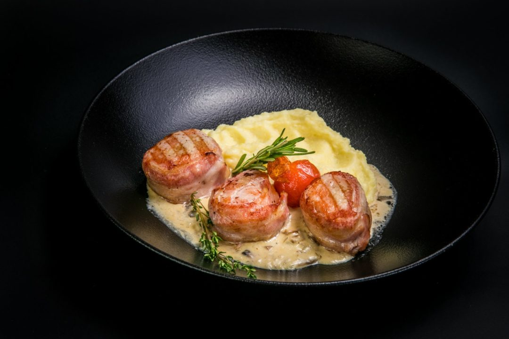

Гастрономическая культура в основе которой идеи и смыслы. Уникальные блюда с уклоном на сезонность и нетривиальное сочетание вкусов и текстур.
Соединение русской классики и трендов мировой кулинарии.

Фуа-гра
на гренки с вишневым соусом и карамелизированным луком

Тартар
из тунца с авокадо, манго и сладкой ваты

Карпаччо
из говядины с пармезаном, рукколой и трюфелным соусом

Креветки
в кокосовой панировке с манго-чили соусом

Медальоны филе
маринованной свинины со сливочным соусом, подается с картофельным пюре